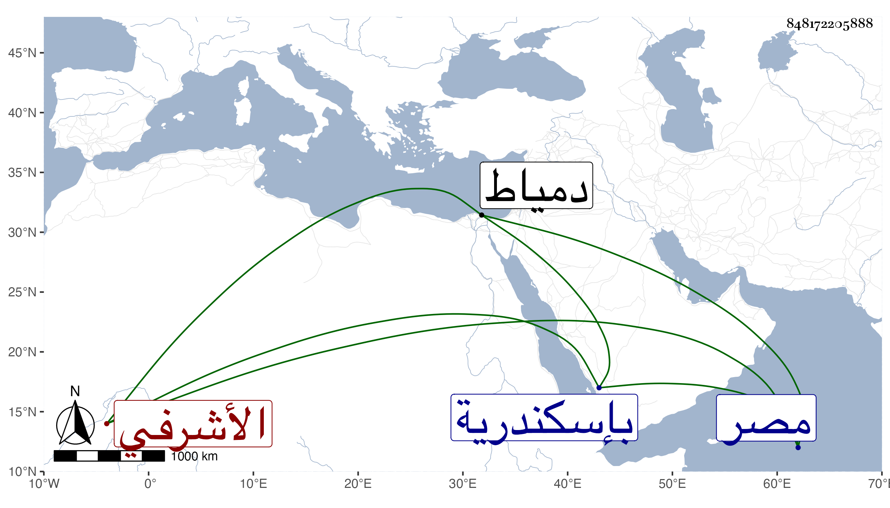

0902Sakhawi.DawLamic.ITO20230111-ara1.EIS1600.848172205888
Biography ID: 848172205888
726
قرقماس الأشرفي برسباي ويعرف بالجلب بجيم ولام مفتوحتين ثم موحدة . كان من معارف أستاذه في بلاد جركس ويقال له أخو الأشرف ويظن أنه رضيعه فجلبه إلى مصر وعمله خاصكيا ثم أمير عشرة ثم أمره الظاهر طبلخاناه ثم قدمه ولده ثم عمله أينال رأس نوبة النوب ثم ولده المؤيد أمير مجلس ثم الظاهر خشقدم أمير سلاح ودام فيها طويلا وتعداه خمسة بل ستة للأتابكية مع كون الحق فيها له إلى أن أمسكه بلباي وحبسه بإسكندرية ثم أطلقه الظاهر تمربغا وخيره فاختار الإقامة بدمياط فتوجه إليها على أحسن وجه إلى أن طلبه الأشرف قايتباي وأنعم عليه بإمرة مائة وجعله أمير مجلس فانحط بذلك درجة ثم عينه لتجريدة سوار فاستعفى فلم يجب وكانت منيته هناك في سنة ثلاث وسبعين ولم توجد له رمة ، وكان عاقلا ساكنا حشما وقورا محتملا صبورا عديم الشر بالكلية رحمه الله .
